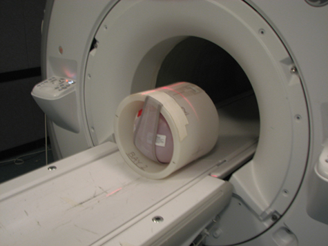
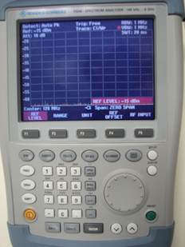
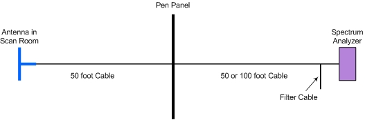
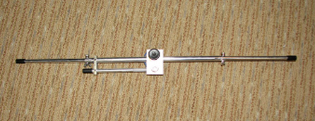

A body sphere is required for the arc detection test.
Procedure
Place the body sphere on the cradle. Landmark the phantom near or in the middle of the cradle to minimize any potential coupling of body RF energy into A, P1, and P2 receive lines, and then press Advance to Scan.
Figure 1. Phantom Setup

Place the spectrum analyzer from the arc detection kit near the operator console (if possible – the maximum length of the cable from the analyzer to the PEN panel is 100 feet).
Plug the spectrum analyzer power adaptor into the proper outlet and into the right side of the spectrum analyzer.
Turn on the spectrum analyzer by pressing the yellow button on the lower left side of the analyzer.
Press the Preset button on the analyzer to download the default settings, then press the SWEEP button.
To set the trigger: Press SWEEP, F5, press either the up ^ or down v button to select video, type 8 and 0, and press ENTER.
Note
The spectrum analyzer automatically loads the default settings on power-up. No programming should be necessary. If programming is required, follow the instructions in Step 7. If no programming is required, proceed to Step 8.
Continue with the spectrum analyzer setup as follows:
Set the frequency to 200 MHz: Press FREQ, type 200, press MHz dBm and ENTER.
Set the frequency span: Press SPAN, type 0, and press ENTER.
Set the range: Press AMPT, F2, either the up ^ or down v button to obtain 5 dB/DIV, and press ENTER.
Set the ref level: Press AMPT. (Press F1 if need so that REF LEVEL is highlighted in red.), – (minus), type 2 and 5 and then press ENTER.
Set the resolution: Press BW, (Press F1 if need so that MANUAL RES BW is highlighted in red.), type 1, press MHz, and ENTER.
Set the video: Press BW, F3, type 1, press MHz, and then ENTER.
Set the sweep time: Press SWEEP, type 2 and 0, and then press ENTER.
Set the detector: Press TRACE, DETECTOR, press either the up ^ or down v button for Auto Peak, and press ENTER.
Set the trigger: Press SWEEP, F5, press either the up ^ or down v button to select Video, type 8 and 0, and press ENTER.
Figure 2. Spectrum Analyzer Setup

Make the following connections for the spectrum analyzer:
Figure 3. Connections to Spectrum Analyzer
Connect the port labeled RF Input to a short 1 ft (0.3 m) cable.
Connect one of the 50 ft coaxial cables to the other side of the BNC-T connector on the stub filter.
Attach the other end of the 50 ft BNC cable to an open BNC connector (service J112 or other open connector) on the PEN panel.
Figure 4. Connections from Analyzer

Note
The kit contains three 50 ft BNC cables. One is used in the scan room, and one is used in the equipment room. The third 50 ft cable can be connected in series either in the scan or equipment room if necessary; however, it is recommended that the minimum cable length be used.
Adjust the two individual dipoles of the antenna out to approximately 13 5/8 inches (34.6 cm) in length. There are fixed holes for the two dipoles. Insert the screws and wing nuts.
Figure 5. Antenna Dipole Adjustment

Temporarily place the antenna in the operator room so it is outside of the magnet room.
Connect the BNC cable between the antenna and the BNC port on the PEN panel, which is connected to the spectrum analyzer.